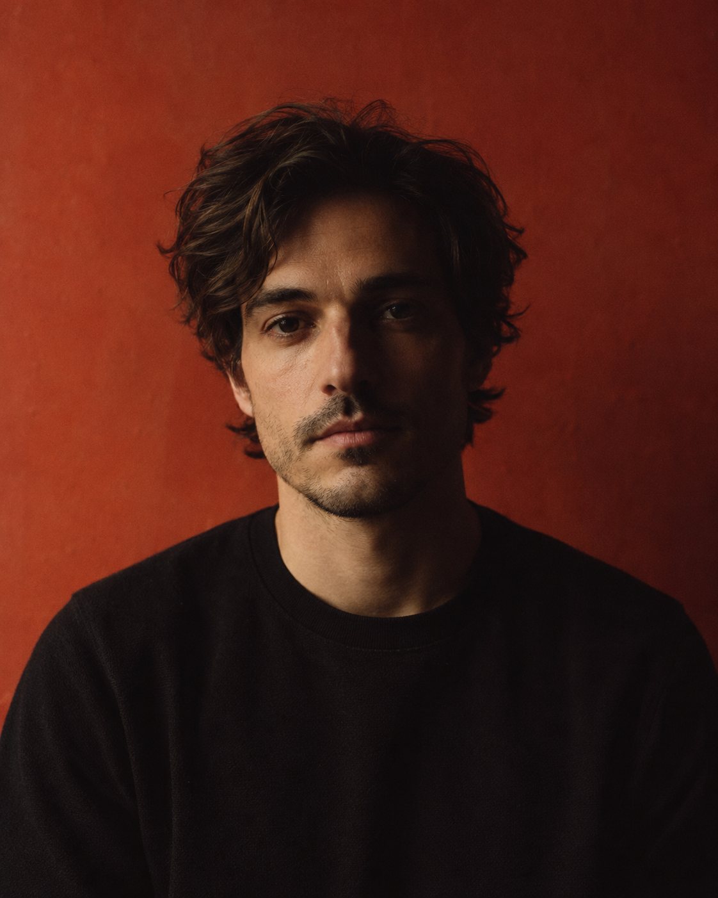

Quiet creator, limitless ideas to life,
through motion, detail and emotion.
LukeBaffait.
↗ V3.0WORK ↓
(01)Selected Work
DIGITAL EXPERIENCE01 / 06
(02)About
As a creative developer, I craft tailor-made web experiences, blending technical precision and emotion.
I build clear, expressive experiences through a careful balance of type, space and motion. Every project starts with a purpose, and every detail should help it feel natural.
INFO / 自制示例资料
(03)Gallery
Small details, different perspectives.
(04)Awards & Misc
Awards & Misc
Source-inspired display only. Later rows and dates are illustrative, not claims of awards earned by this reproduction.
(05)Contact